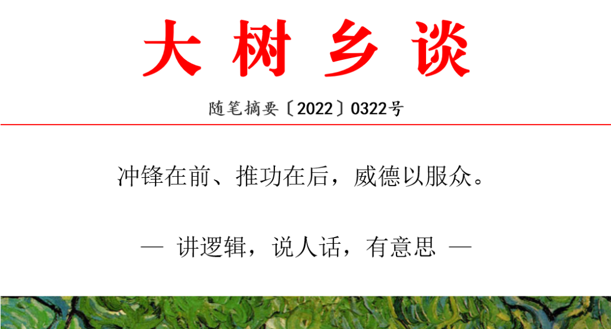

中层别把自己当领导

中层其实可以很舒服，但也可能很累，关键看怎么干。 任何组织的中层，大小也算是个管理者了。第一次从做事转为带人，就容易心态失衡，往往有些人一朝做官，就忍不住试试官威，说话的声音都变了，刻意的低沉、严肃，还要试试独断专行的感觉。
这是病，得治。 其实中层哪里是领导呢？一没财权、二没人事权，算什么领导呢？ 无论体制内还是体制外，尤其是体制外的公司，只要从事的就是脑力劳动，不是流水线、体力活，也不是军队等纪律严明的地方。中层管理者就很难有效威胁手下的人，总不能啥事都动用人事手段吧？
这岂不等于自己承认自己无能吗？ 城市里绝大多数的白领、办公室工作，中层管理者只要还想上进、哪怕是轻松点，都必须好好维护自己的团队，怎么维护呢？把姿态低下来，甚至求着自己手下的人，让他们心甘情愿地干活，这才是正道。 别觉得可以用简单粗暴的命令。手下人有的是办法偷懒、更可以轻轻松松的把中层的事搞黄、让中层背锅。比如针对不同的事，预告或者不预告风险，请示又或者不请示等等。 具体不举例了，省的带坏大家。 至于开除？到底谁怕啊。 不说体制内有编制，一个中层无论处长、科长，真把下面的小兵得罪狠了，他豁出去大闹，看谁受影响更大。
体制外更别说了，一个小兵想换公司的成本可比中层小多了，更何况开除人多了，人事部门也会来找的，培养个熟手哪这么容易，这都是成本。 什么是中层？那就是上要尊着领导、完成任务，下要顾着员工、想尽办法让他们好好干活。老板骂中层，中层不敢对骂；员工骂中层，中层还得考虑后果，多半还是得怀柔。 中层最大的危险就在于把自己真的当成了领导，脱离群众。 作为中层，自己最大的资源就是自己的下属，只有他们尽心尽力，才有自己完成任务、进步的可能。
所以，上要为团队争取更多资源，下要为员工创造更多成长空间，着实不容易，哪里有资格摆领导架子呢？ 需知：任何一个地方，真正有开创性的价值，不是来自于高薪或者严格的管理，而是由发自内心的力量推动的。这些力量是信任、热情、发自内心的认同和团结，需要经历日日夜夜的思考、打拼，需要的是N个人齐心协力，而不是一个不清醒的大脑加上N个不听话的手。 摆正位置，不要把晋升的好事搞成坏事。
其他文章推荐
■ 2022年中国房地产政策、房价及个人选择
如果喜欢，还请点赞、“在看”和关注吧 欢迎分享，让更多人发现“大树乡谈”